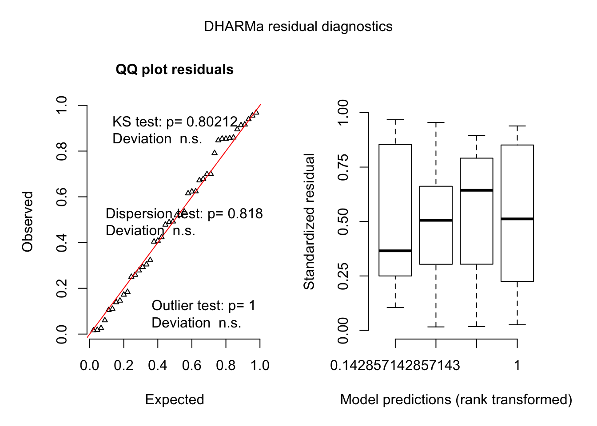

Model 3 - Preference for the rewarded object during testing depending on treatment
Main effects
For the main effects of training and rewarding object colour on rewarding object preference I initially fit a linear mixed effects model with fixed effects of trial and rewarding object colour and a random effect of individual id.
Due to heterogeneity in the variance among groups however, I switched to a generalized linear mixed effects model with a Gaussian distribution which also modeled the variances to account for variance heterogeneity using the package glmmTMB. My third model asks whether the preference for the rewarding object changed between baseline and final test and looks for an interaction with rewarded object colour.
Variables
rewarding.object.preferenceis the time (seconds) spent near the rewarding object subtracted by the time spent near the unrewarding objectrewarding.object.colouris the identity of the rewarding object (blue or green)trialis the number of the training trial. In this model it is supplied as a factor where 0 is the baseline trial and 21 is the final trialidis the identity of the individual fish
Model
test.data.model.glm =
glmmTMB(rewarding.object.preference ~ trial * rewarding.object.colour + (1|id) +
diag(0 + rewarding.object.colour:trial |id),
data = test.data, family = gaussian)Results
| term | estimate | std.error | statistic | p.value |
|---|---|---|---|---|
| trial21 | 17.697 | 10.017 | 1.767 | 0.077 |
| rewarding.object.colourgreen | 1.645 | 5.542 | 0.297 | 0.767 |
| trial21:rewarding.object.colourgreen | 65.351 | 20.832 | 3.137 | 0.002 |
I found a significant interaction effect between trial and rewarding object colour (p = 0.002). Guppies that had the green object rewarded had a final rewarded object preference that was 65.4 seconds stronger than the rewarded object preference of guppies trained to blue (Figure 3).
Figure 3: The initial and final rewarding object preference. Dashed line represents the no preference value. Data are means +/- 95% CI. Bold line connects means across trials.
Model Residuals
Originally I fit a LMM but they variance among the groups was uneven producing the following residual plot.

I therefore used glmmTMB to allow for the modeling of the variances and account for heterogeneous variance.

Post-hoc Comparisons
To determine whether the means of the final rewarding object preference for the two treatments were different I conducted post-hoc comparisons with the package emmeans. I compared the following means:
- Final test blue-trained and initial test blue-trained
- Final test green-trained and initial test green-trained
- Final test green-trained and final test blue-trained
- Initial test green-trained and initial test blue-trained
test.data.model.pairwise.comparisons =
emmeans(test.data.model2, specs = ~ trial:rewarding.object.colour)
custom.contrasts = contrast(test.data.model.pairwise.comparisons,
method = list("21 blue - 0 blue" = blue21- blue0,
"21 green - 0 green " = green21 - green0,
"21 green - 21 blue" = green21 - blue21,
"0 green - 0 blue" = green0- blue0),
adjust = "mvt") %>% summary(infer = TRUE)Results
| contrast | estimate | lower.CL | upper.CL | df | p.value |
|---|---|---|---|---|---|
| 21 blue - 0 blue | 17.697 | -7.967 | 43.362 | 34 | 0.251 |
| 21 green - 0 green | 83.048 | 36.249 | 129.846 | 34 | < .001 |
| 21 green - 21 blue | 66.996 | 15.545 | 118.446 | 34 | 0.007 |
| 0 green - 0 blue | 1.645 | -12.554 | 15.844 | 34 | 0.988 |
Post-hoc comparisons investigating the differences between treatments based on whether guppies are untrained or trained reveals that initially, when untrained, there was no difference in the strength of preference for the rewarding object between the treatments (blue-trained guppies had a blue object preference of 1.8 seconds and green-trained guppies had a green object preference of 3.5 seconds, p < .001).
Comparing the shift in rewarding object preference between initial and final preference tests in blue-trained and green-trained guppies reveals that the shift in rewarding object preference is significant for green-trained guppies but not for blue-trained guppies. Green trained guppies increased their preference for the green object by 83 seconds (going from a green object preference of 3.5 seconds initially to 86.5 seconds at final test, p < .001) whereas blue-trained guppies non-significantly increased their preference for the blue object by 17.7 seconds (going from a blue object preference 1.8 seconds initially to 19.5 seconds at final test, p = 0.251). For a full description of post-hoc comparisons see table 1.